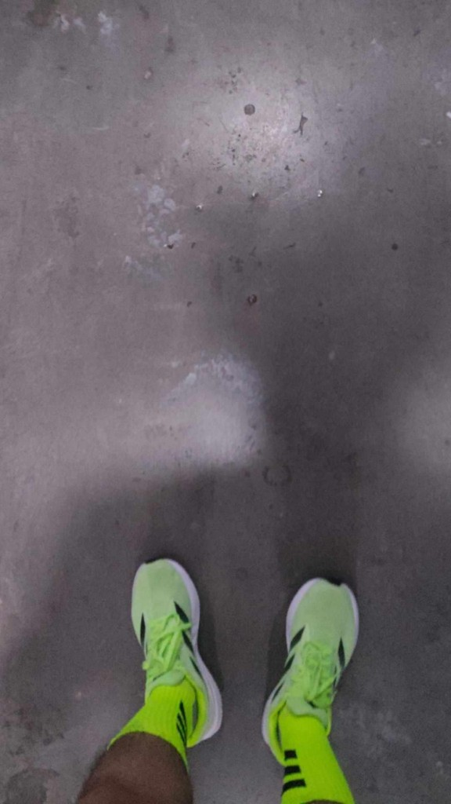
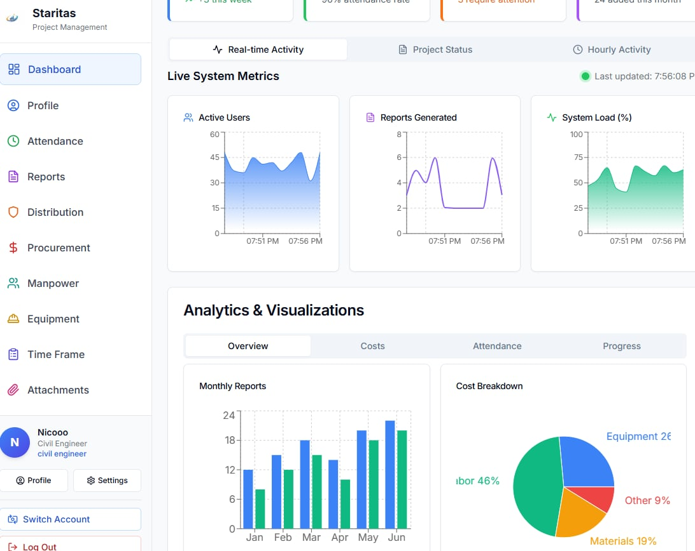
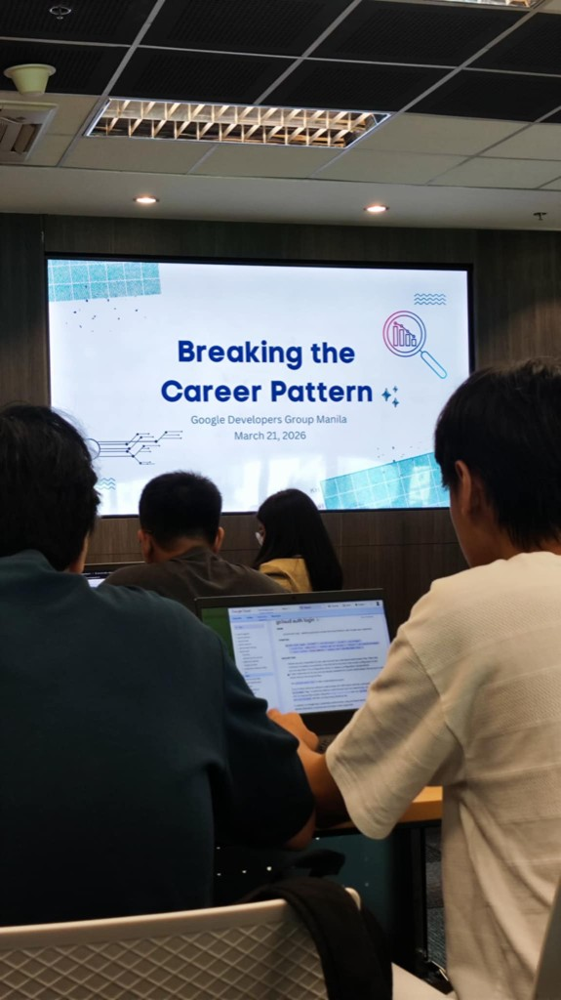
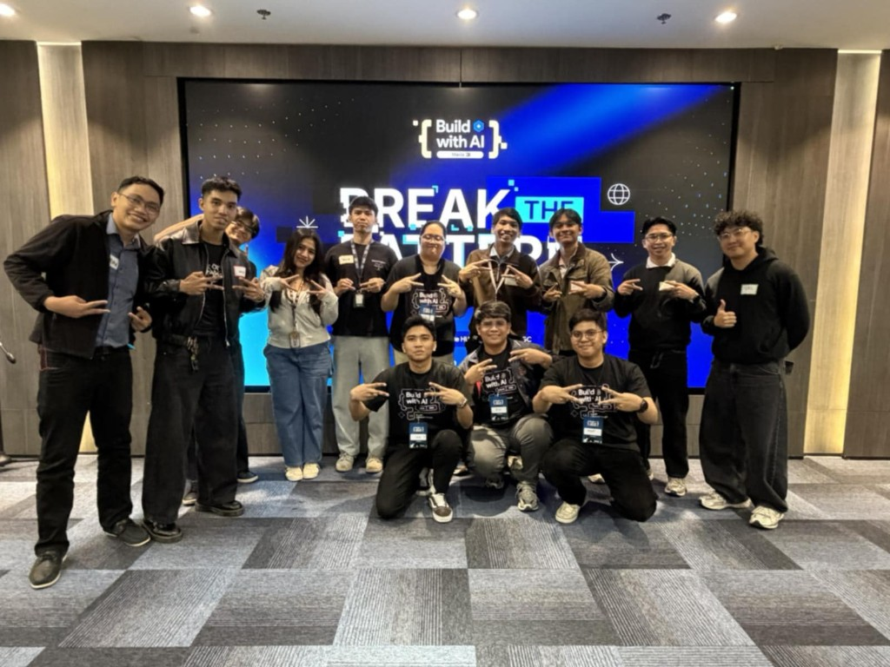
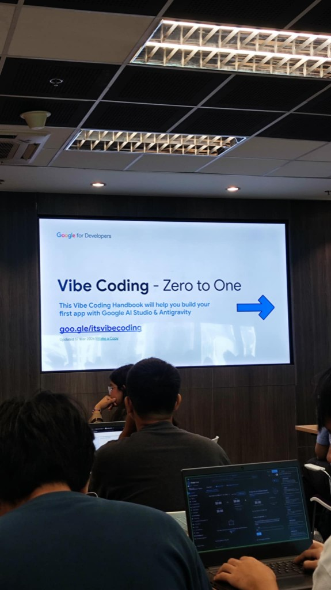
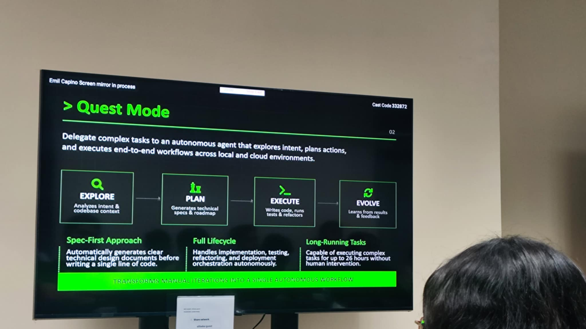
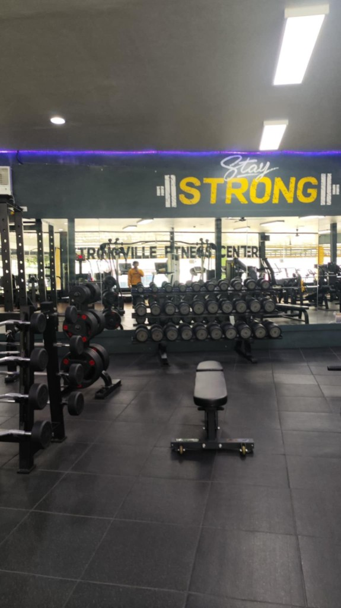

On the move
Every single step counts — whether it feels small or insignificant, it is still progress.
A collection of my latest and past work

A construction and project management system that integrates attendance tracking, procurement, equipment monitoring, and cost analysis. It enables efficient reporting, workforce management, and data-driven decisions in one platform.
Recent meetups and developer sessions I've joined.

Session with Google Developers Group Manila on rethinking career paths and growth in tech — great conversations with builders in the room.

Build with AI — group shot with fellow participants after an energizing session. Same spirit as breaking old habits and trying new tools.

Workshop track on Vibe Coding — building a first app with Google AI Studio and Antigravity, guided by the official handbook.

Currently exploring and mastering AI engineering through different AI-powered IDEs and communities. Leveraging tools like Claude Code, Lovable, Cursor, Qoder, Zed, and Databricks to push the boundaries of AI-assisted development. Actively engaging with AI communities to share knowledge and collaborate on innovative solutions.
Helped develop a digital room monitoring system to track classroom usage and availability using XAMPP and MariaDB database integration and basic automation tools.
Designed and implemented a website platform for reporting and retrieving lost items within the Batangas State University campus using web development frameworks.
Developed a comprehensive AI-driven software solution aimed at optimizing processes in the construction sector, incorporated machine learning models for predictive analysis and automation.
Technologies and tools I work with
My journey in tech and beyond
I'm Nico, a Junior Data Analyst and a Computer Engineering graduate with a growing passion for AI engineering. My interest in artificial intelligence has led me to actively explore the field and deepen my understanding of how AI can be applied in real-world scenarios.
I'm currently participating in various events and learning opportunities focused on AI to better understand its evolving landscape. Along the way, I've been exploring modern tools and IDEs such as Claude, Cursor, Qoder, Lovable, and Databricks to enhance both my development workflow and problem-solving skills.
Fitness, balance, and the small moments away from code and data

Every single step counts — whether it feels small or insignificant, it is still progress.

Training keeps me disciplined and energized — the same focus I bring to building and analyzing systems.
Let's connect and build something great